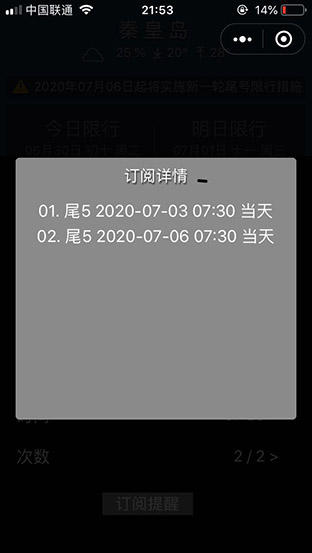

经常忘记今天限行哪个车号，索性写了一个工具类小程序帮助提醒限号，分享给同样有健忘症的朋友。6月1日上线，取名当日限行。主要支持京津冀（北京、天津、秦皇岛）、西安、武汉、兰州等城市尾号限行查询，包括尾号、阴历、节假日，调休等。在订阅提醒消息方面，考虑到隐私保护，不收集用户车牌号、手机号，只依据车牌尾号预订提醒信息。由于微信政策限制，个人用户未开通长期定阅消息，目前用户只能点击一次预订一条提醒信息，现支持预设2月内提醒信息，每用户可订阅两个车牌尾号。未选尾号时，默认为可预订所选城市10日内通用提醒信息。



免责声明：如限行规定变化，请以政府最新政策为准。（本人只是信息的搬运工，不是政策的制定者）。